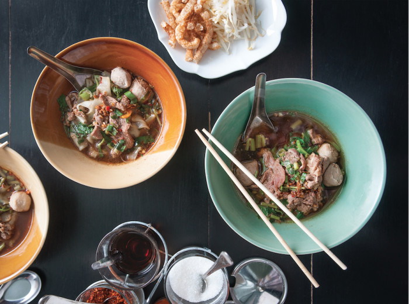

Boat Noodles (Guay Tiew Reua)

Venice of the East!
It’s a little-known fact that Bangkok was once called the Venice of the East.
During the nineteenth century, the city was home to a system of expansive canals (called klongs) that connected houses, temples, and public spaces.
Boating was the most common form of transportation for both people and commerce.
Bangkok’s transport system shifted to roads at the turn of the twentieth century, but some of the foods that originated within the canal lifestyle have survived.
Perhaps the most famous of these is boat noodles, a small but rich pho-like dish served with fresh bean sprouts, Thai basil, crispy pork skin, and a row of condiments.
Ingredients
Noodles
- 1/2 cup pork blood, optional
- 8 teaspoons sugar
- 4 tablespoons fish sauce
- 1 pound pork tenderloin, thinly sliced
- 1 cup store-bought pork meatballs
- 1 quart bean sprouts
- 4 cups water spinach, cut into 2-inch pieces
- 1/2 cup crispy pork skin
- 1/2 cup roughly chopped scallions
- 1/2 cup roughly chopped cilantro
- 1/2 cup roughly chopped Chinese celery
- freshly ground white pepper
Pork Stock
- 2 pounds baby back pork ribs
- 8 ounces daikon (about 1 medium root), peeled and cut into 2-inch slices
- 1 whole head garlic, cut in half
- 1 tablespoon whole black peppercorns
- 1 tablespoon salt
- 3 tablespoons mushroom sauce
- 1/3 cup brown sugar
Thai chilies in Vinegar
- 1 cup distilled white vinegar
- 11 fresh red or green long Thai chile, sliced 1/4 inch thick
Fried Garlic
- 1 cup vegetable oil
- 1 whole head garlic, peeled, cloves finely chopped
Directions
For the Pork Stock
- In a stockpot, combine 3 quarts water, the ribs, daikon, cilantro roots, garlic, and peppercorns. Place over high heat and bring to a boil. Lower the heat to low to maintain a low simmer, skimming any foam that rises to the top as needed. Add the salt, mushroom sauce, and brown sugar and simmer, uncovered, for about 3 hours. At this point, the broth will have a rich bone marrow flavor.
- Remove from the heat and let cool, then strain through a colander lined with cheesecloth. Discard the solids and store the stock in a covered container in the refrigerator for up to 3 days or freeze for up to 3 months.
For the Thai Chilies in Vinegar
- To give the Thai long chilies a quick pickle, mix the two ingredients about 30 minutes before serving.
For the fried garlic
- Combine the oil and garlic in a small saucepan over low heat. Stir constantly with a wooden spoon for about 3 minutes, just until the garlic turns a light golden brown. Your nose will also tell you when it’s ready — your kitchen will fill with the rich aroma of toasted garlic. Watch — and sniff — closely, as the garlic can go from perfect to burned heartbreakingly fast if you turn your back. Once it turns golden and smells right, remove from the heat immediately and let the hot oil finish the job.
For the Noodles
- In a large saucepan, bring the stock to a boil over high heat. Lower the heat to maintain a simmer and add the pork blood, if using.
- Ready four individual soup bowls and add 1 tablespoon chilies in vinegar, 2 teaspoons sugar, and 1 tablespoon fish sauce to each.
- In a large saucepan, bring 4 quarts water to a boil and set the pan up with a blanching basket or steamer insert. Blanch the tenderloin and meatballs in the boiling water for 3 to 5 minutes, just until the tenderloin is no longer pink and the meatballs are hot, then divide among the four prepared bowls. Repeat with the noodles for 2 to 3 minutes, just until tender, and the bean sprouts and water spinach, just until wilted, and divide these among the bowls.
- Ladle hot stock over the noodles in each bowl. Season with fried garlic, crispy pork skin, scallions, cilantro, Chinese celery, and white pepper to taste and serve.
Return to main page
Source